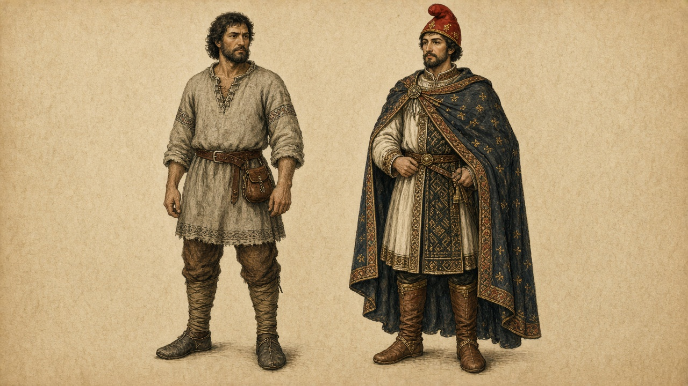
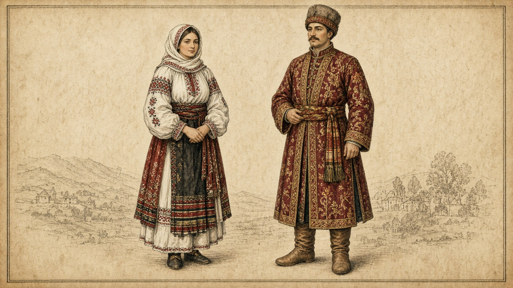
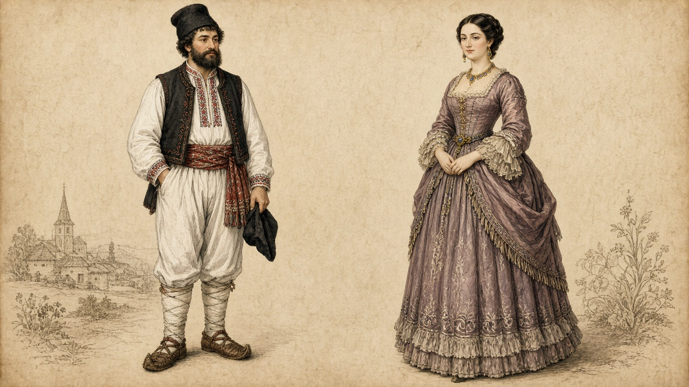
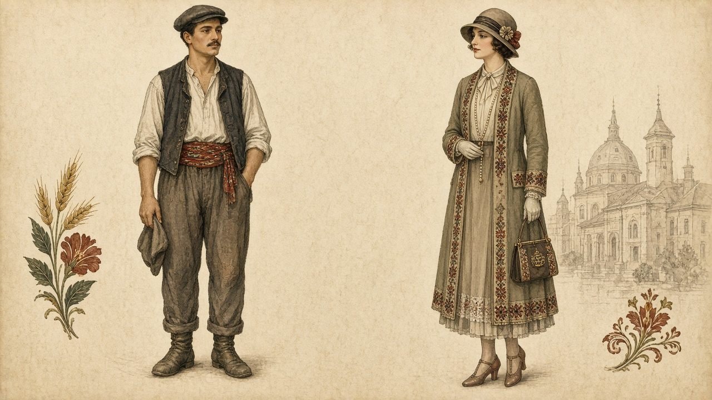
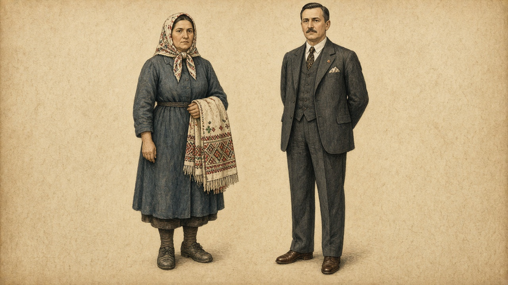
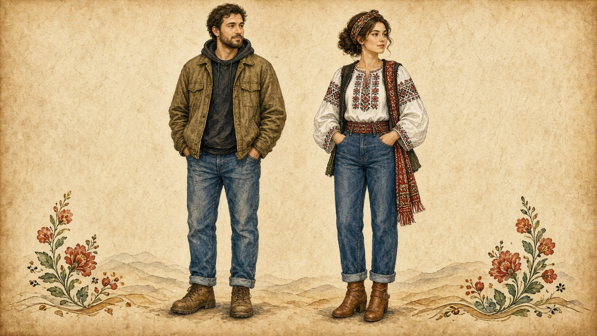

Wardrobe
Working clothes and elite or city clothes, drawn as pairs. Imagined plates, not reconstructions from a single grave or museum case. The dated stops live on the timeline.

Dacia and the early centuries: a short tunic and wrapped legs for work, a longer coat and cloak for rank. On the timeline.

The principalities: the ia — the embroidered blouse named on crafts — beside a boyar caftan. On the timeline.

The 1859 union and the kingdom years: an embroidered village shirt beside a city gown. On the timeline.

After 1918, in the interwar kingdom: workshop vest and cap beside a tailored city coat. On the timeline.

The communist decades: a plain work dress and household cloth beside a dark suit. On the timeline.

The present: everyday jacket and jeans beside an ia worn with modern trousers — the same blouse as on crafts. On the timeline.